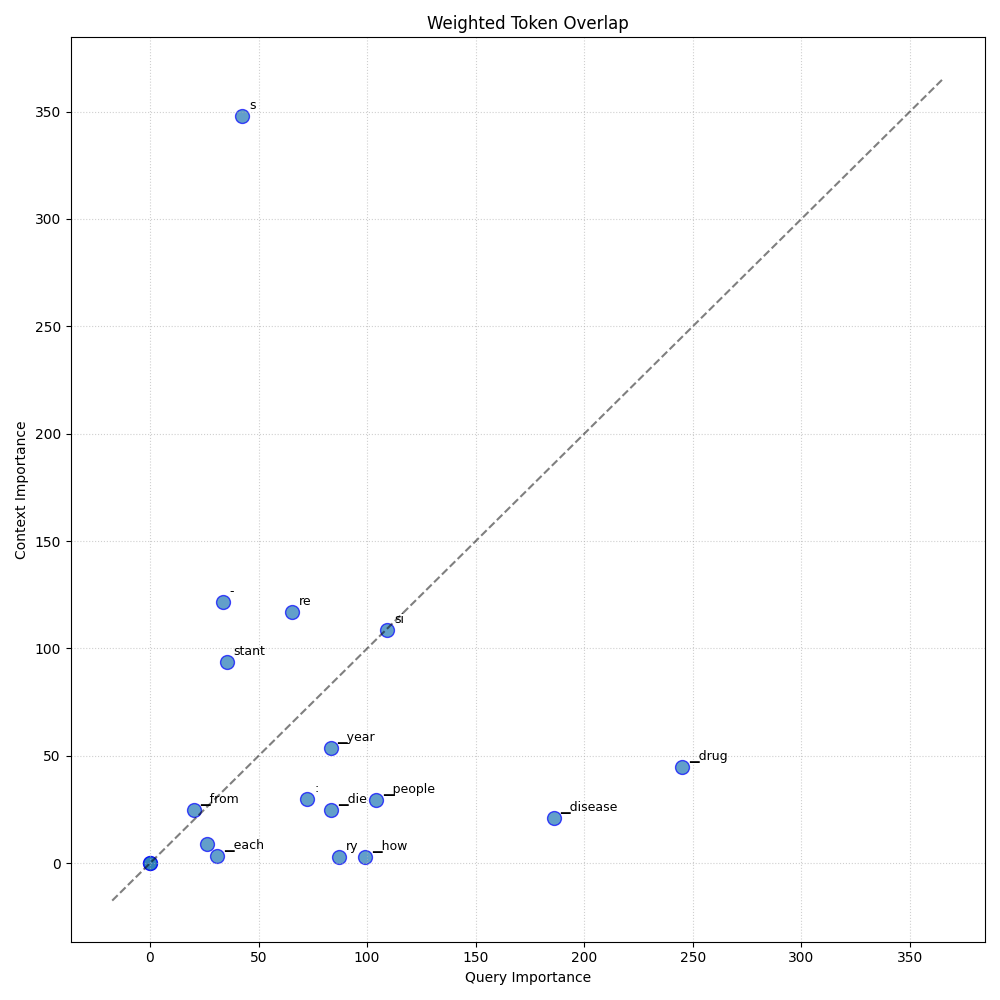

Analysis: query_20
Query: ▁query:▁How▁many▁people▁die▁each▁year▁from▁drug-resistant▁diseases?
Document Relevance

Weighted Overlap

Token Comparison

Documents
Document 1 (Click to Expand)
▁Based▁on▁our▁simulations,▁these▁infections▁with▁antibiotic-resistant▁bacteria▁resulted▁in▁an▁annual▁number▁of▁attributable▁deaths▁from▁30▁730▁(95%▁UI▁26▁935–34▁836)▁in▁2016▁to▁38▁710▁(95%▁UI▁34▁053–43▁748)▁in▁2019,▁with▁a▁small▁decrease▁to▁35▁813▁deaths▁(95%▁UI▁31▁395–40▁584)▁in▁2020.▁When▁analysed▁as▁DALYs,▁the▁infections▁led▁to▁an▁annual▁health▁burden▁ranging▁from▁909▁488▁(95%▁UI▁813▁858–1▁013▁060)▁in▁2016▁to▁1▁101▁288▁(95%▁UI▁988▁703–1▁222▁498)▁in▁2019,▁with▁a▁small▁decrease▁to▁1▁014▁799▁DALYs▁(95%▁UI▁908▁022–1▁129▁999)▁in▁2020.▁Each▁year,▁84-85%▁of▁these▁DALYs▁were▁caused▁by▁years▁of▁life▁lost▁(YLLs)▁and▁67-68%▁were▁due▁to▁BSIs.▁We▁estimated▁that▁70.9%▁of▁cases▁of▁infections▁with▁antibiotic-resistant▁bacteria▁(95%▁CI▁68.2–74.0%)▁were▁healthcare-associated▁infections,▁with▁71.4%▁attributable▁deaths▁(95%▁CI▁69.0–74.4%)▁and▁73.0%▁DALYs▁(95%▁CI▁70.▁–75.8%),▁respectively,▁being▁linked▁to▁healthcare-associated▁infections.▁4▁TECHNICAL▁REPORT▁Assessing▁the▁Health▁burden▁of▁infections▁with▁antibiotic-resistant▁bacteria▁in▁the▁EU/EEA,▁2016-2020▁Table▁2.▁Total▁number▁of▁blood▁isolates▁of▁the▁selected▁antibiotic-resistant▁bacteria▁as▁reported▁to▁EARS-Net,▁and▁estimated▁number▁of▁bloodstream▁infections,▁number▁of▁infections,▁number▁of▁attributable▁deaths▁and▁number▁of▁disability-adjusted▁life▁years▁(DALYs),▁EU/EEA,▁2016-2020
Document 2 (Click to Expand)
▁#▁Antibiotic▁resistance▁is▁an▁increasing▁problem.▁Learn▁all▁about▁it▁in▁the▁Drug▁Resistance▁channel.▁Staphylococcus▁aureus▁,▁Clostridioides▁difficile▁,▁Candida▁auris▁,▁Drug-resistant▁Shigella▁.▁These▁bacteria▁not▁only▁have▁difficult▁names▁to▁pronounce,▁but▁they▁are▁also▁difficult▁to▁fight▁off.▁These▁bacteria▁may▁infect▁humans▁and▁animals,▁and▁the▁infections▁they▁cause▁are▁harder▁to▁treat▁than▁those▁caused▁by▁non-resistant▁bacteria.▁Antimicrobial▁resistance▁is▁an▁urgent▁global▁public▁health▁threat.▁According▁to▁the▁World▁Health▁Organization,▁antibiotic▁resistance▁leads▁to▁higher▁medical▁costs,▁prolonged▁hospital▁stays,▁and▁increased▁mortality.▁It▁kills▁at▁least▁1.27▁million▁people▁worldwide▁and▁they▁are▁associated▁with▁nearly▁5▁million▁deaths▁in▁2019,▁according▁to▁the▁CDC.▁In▁the▁U.S.,▁more▁than▁2.8▁million▁antimicrobial-resistant▁infections▁occur▁each▁year.▁Careful▁prescribing▁of▁antibiotics▁will▁minimize▁the▁development▁of▁more▁antibiotic-resistant▁strains▁of▁bacteria.▁Staying▁informed▁is▁another▁way▁to▁fight▁these▁dangerous▁"superbugs."▁Below▁are▁some▁of▁the▁latest▁news▁updates▁on▁the▁topic▁of▁Drug▁Resistance.▁Scientists▁make▁critical▁progress▁toward▁preventing▁C.▁diff▁infections▁(embargoed▁until▁26-Mar-2023▁5:00▁PM▁EDT)▁Resistant▁bacteria▁are▁a▁global▁problem.▁Now▁researchers▁may▁have▁found▁the▁solution▁Potential▁Treatment▁Target▁for▁Drug-Resistant▁Epilepsy▁Identified▁Brazilian▁researchers▁investigate▁diversity▁of▁E.▁coli▁bacteria▁in▁hospitalized▁patients▁A▁Quick▁New▁Way▁to▁Screen▁Virus▁Proteins▁for▁Antibiotic▁Properties▁New▁Class▁of▁Drugs▁Could▁Prevent▁Resistant▁COVID-19▁Variants▁The▁world's▁first▁mRNA▁vaccine▁for▁deadly▁bacteria▁From▁anti-antibiotics▁to▁extinction▁therapy:▁how▁evolutionary▁thinking▁can▁transform▁medicine▁St.▁Jude▁approach▁prevents▁drug▁resistance▁and▁toxicity▁Restricting▁antibiotics▁for▁livestock▁could▁limit▁spread▁of▁antibiotic-resistant▁infections▁in▁people▁Resistance▁Is▁Futile▁Bacteria▁communicate▁like▁us▁–▁and▁we▁could▁use▁this▁to▁help▁address▁antibiotic▁resistance▁Study▁reveals▁how▁drug▁resistant▁bacteria▁secrete▁toxins,▁suggesting▁targets▁to▁reduce▁virulence
Document 3 (Click to Expand)
▁#▁A▁health▁burden▁comparable▁to▁influenza,▁HIV/AIDS▁and▁tuberculosis▁combined?▁Antibiotic▁resistance▁is▁the▁challenge▁of▁the▁21st▁century▁Photo:▁Shutterstock▁SZÚ▁press▁release▁–▁Every▁year▁in▁Europe,▁more▁than▁35,000▁people▁die▁as▁a▁result▁of▁antibiotic▁resistance.▁If▁the▁negative▁trend▁continues▁at▁the▁same▁pace,▁it▁will▁account▁for▁10▁million▁victims▁worldwide▁in▁2050.▁Infections▁caused▁by▁resistant▁bacteria▁cost▁EU▁health▁systems▁€1.1▁billion▁annually.▁Nevertheless,▁there▁is▁a▁chance▁to▁improve▁the▁unfavorable▁statistics.▁The▁solution▁is▁to▁approach▁the▁issue▁in▁the▁spirit▁of▁"One▁Health"▁-▁"one▁health"▁-▁and▁also▁to▁educate▁our▁doctors▁and▁the▁public,▁which▁is▁what▁the▁SZÚ▁Antibiotic▁Resistance▁Project▁is▁trying▁to▁do▁in▁the▁Czech▁Republic.▁And▁positive▁results▁are▁coming.▁In▁2019,▁there▁were▁1.27▁million▁deaths▁caused▁by▁antibiotic-resistant▁bacteria▁worldwide.▁There▁are▁35,000▁victims▁in▁Europe.▁Just▁6▁main▁pathogens▁–▁E.▁coli,▁S.▁aureus,▁K.▁pneumoniae,▁S.▁pneumoniae,▁A.▁baumannii▁and▁P.▁aeruginosa▁–▁were▁responsible▁for▁more▁than▁73%▁of▁them.▁In▁the▁Czech▁Republic,▁these▁bacteria▁are▁responsible▁for▁the▁lives▁of▁approximately▁500▁people▁every▁year.▁What▁is▁extremely▁worrying,▁however,▁is▁the▁fact▁that▁in▁our▁country,▁antibiotic▁resistance▁has▁more▁victims▁than▁car▁accidents.▁"The▁campaign▁against▁antibiotic▁resistance,▁which▁we▁implemented▁for▁two▁years,▁was▁necessary▁in▁view▁of▁these▁data,▁and▁the▁data▁proves▁to▁us▁that▁the▁Czech▁public's▁awareness▁of▁the▁issue▁has▁improved▁significantly.▁We▁must▁continue▁to▁fight▁systematically▁in▁cooperation▁with▁the▁public▁and▁experts▁against▁antibiotics▁losing▁their▁strength.▁On▁the▁front▁line▁with▁the▁patient▁are▁general▁practitioners,▁who▁can▁face▁pressure▁from▁uninformed▁patients▁to▁prescribe▁antibiotics▁even▁when▁people▁come▁in▁with▁illnesses▁that▁antibiotics▁don't▁work▁on.▁It▁is▁good▁for▁doctors▁to▁patiently▁explain▁two▁things:▁why▁they▁do▁not▁prescribe▁antibiotics,▁or▁how▁important▁it▁is▁that▁their▁use▁be▁strictly▁followed.▁In▁the▁same▁way,▁patients▁learn▁about▁careful▁use▁in▁pharmacies,▁and▁I▁believe▁that▁thanks▁to▁our▁campaign,▁patients▁will▁now▁come▁more▁informed,▁knowing▁that▁antibiotics▁have▁their▁irreplaceable▁role,▁but▁they▁do▁not▁benefit▁anyone▁if▁they▁are▁used▁unnecessarily▁or▁incorrectly,"▁reminds▁the▁Director▁of▁the▁State▁Health▁Service▁institute▁MUDr.▁Barbora▁Macková,▁MHA.▁Why▁did▁antibiotics▁begin▁to▁lose▁their▁healing▁effects?▁Naturally,▁because▁the▁bacteria▁started▁to▁get▁used▁to▁them.
Document 4 (Click to Expand)
▁##▁1.5▁Trends▁in▁antimicrobial▁resistance▁##▁1.5.1▁Global▁trends▁WHO▁reports▁that,▁about▁440▁000▁new▁cases▁of▁multidrug-resistant▁tuberculosis▁(MDR-TB)▁emerge▁annually,▁causing▁at▁least▁150▁000▁deaths.▁Extensively▁drug-resistant▁tuberculosis▁(XDR-TB)▁has▁been▁reported▁in▁64▁countries▁(WHO,▁2014).▁It▁is▁also▁reported▁that,▁a▁high▁percentage▁of▁hospital-acquired▁infections▁are▁caused▁by▁highly▁resistant▁bacteria▁such▁as▁methicillin-resistant▁Staphylococcus▁aureus▁(MRSA).▁AMR▁has▁become▁a▁serious▁problem▁for▁treatment▁of▁gonorrhea▁(caused▁by▁Neisseria▁gonorrhoeae),▁involving▁“last-line”▁oral▁cephalosporins.▁This▁phenomenon▁is▁increasing▁in▁prevalence▁worldwide.▁Untreatable▁gonococcal▁infections▁would▁result▁in▁increased▁rates▁of▁illness▁and▁death,▁thus▁reversing▁the▁gains▁made▁in▁the▁control▁of▁this▁sexually▁transmitted▁infection▁(WHO,▁2014).▁AMR▁is▁also▁an▁emerging▁concern▁for▁treatment▁of▁HIV▁infection,▁after▁the▁rapid▁expansion▁in▁access▁to▁antiretroviral▁drugs▁in▁recent▁years.▁##▁page▁4▁Policy▁on▁Antimicrobial▁Use▁and▁Resistance▁for▁Ghana,▁1st▁Edition▁2017▁At▁the▁end▁of▁2011,▁more▁than▁8▁million▁people▁were▁receiving▁antiretroviral▁therapy▁in▁low-▁and▁middle-income▁countries▁to▁treat▁HIV.▁Although▁analysis▁of▁data▁from▁WHO▁surveys▁that▁target▁people▁who▁have▁been▁recently▁infected▁with▁HIV▁indicates▁increasing▁levels▁of▁resistance▁to▁the▁non-nucleoside▁reverse▁transcriptase▁(NNRTI)▁class▁of▁drug▁used▁to▁treat▁HIV.This▁increase▁is▁particularly▁noticeable▁in▁Af-▁rica,▁where▁the▁prevalence▁of▁resistance▁to▁NNRTI▁reached▁3.4%▁(95%▁CI,▁1.8-5.2%)▁in▁2009▁(WHO,▁2014).▁Over▁the▁past▁10▁years,▁antiviral▁drugs▁have▁become▁important▁tools▁for▁treatment▁of▁epidemic▁and▁pandemic▁influenza.▁It▁was▁estimated▁that,▁by▁2012,▁virtually▁all▁influenza▁A▁viruses▁circulating▁in▁humans▁would▁be▁resistant▁to▁drugs▁frequently▁used▁for▁the▁prevention▁of▁influenza▁(amantadine▁and▁rimantadine).▁Antiviral▁susceptibility▁is▁constantly▁monitored▁through▁the▁WHO▁Global▁Surveillance▁and▁Response▁System.▁There▁is▁evidence▁to▁show▁that▁aquaculture▁has▁been▁contributing▁to▁the▁global▁development▁and▁spread▁of▁AMR.
Document 5 (Click to Expand)
▁More▁than▁96▁percent▁of▁those▁drugs▁are▁routinely▁distributed▁in▁feed▁or▁water—often▁to▁animals▁that▁are▁not▁sick▁to▁speed▁up▁growth▁and▁help▁animals▁survive▁crowded▁and▁unsanitary▁conditions▁on▁industrial▁farms.▁This▁practice▁contributes▁to▁the▁growing▁epidemic▁of▁drug-resistant▁infections▁in▁humans.▁Leading▁medical▁experts▁warn▁that▁we▁must▁stop▁overuse▁of▁antibiotics▁in▁human▁medicine▁and▁animal▁agriculture,▁or▁else▁the▁life-saving▁drugs▁we▁rely▁on▁to▁treat▁common▁infections▁and▁enable▁medical▁procedures▁could▁stop▁working.▁Conservatively,▁at▁least▁2▁million▁Americans▁are▁infected▁with▁antibiotic-resistant▁infections▁every▁year,▁and▁at▁least▁23,000▁die▁as▁a▁direct▁result,▁according▁to▁the▁Centers▁for▁Disease▁Control▁and▁Prevention.▁Earlier▁this▁year,▁scientists▁discovered▁a▁gene▁which▁allows▁bacteria▁to▁resist▁colistin--an▁antibiotic▁used▁as▁a▁last-resort▁when▁all▁other▁antibiotics▁fail--in▁the▁U.S.▁for▁the▁first▁time,▁raising▁the▁spectre▁of▁a▁kind▁of▁“super-superbug,”▁resistant▁to▁every▁life-saving▁antibiotic▁available.▁Additional▁Resources▁Center▁for▁Food▁Safety▁Fact▁Sheet:▁"Pharming▁Profits:▁The▁Drugs▁that▁Make▁Cheap▁Meat"▁###